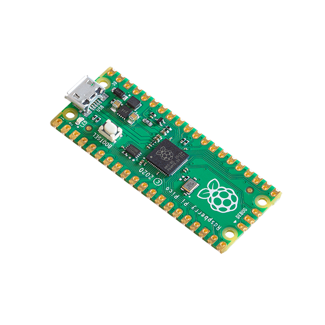
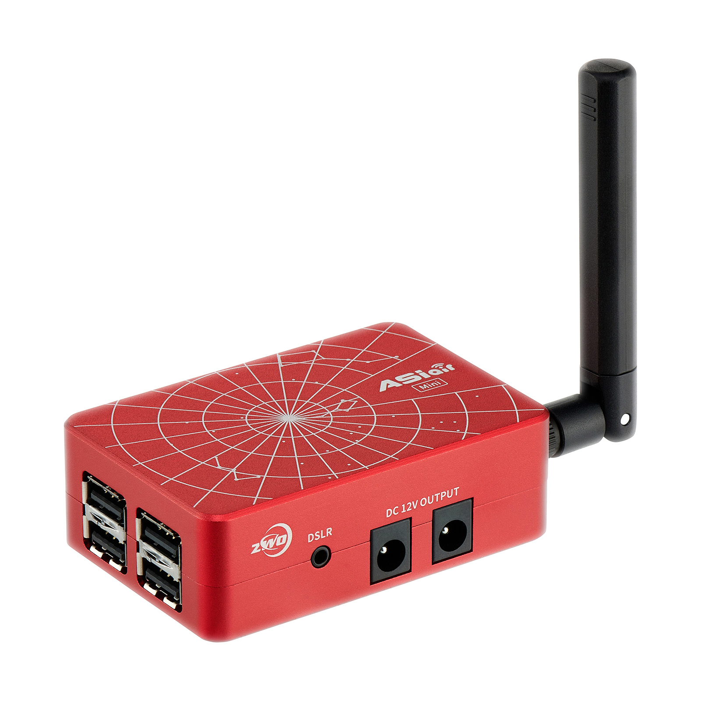
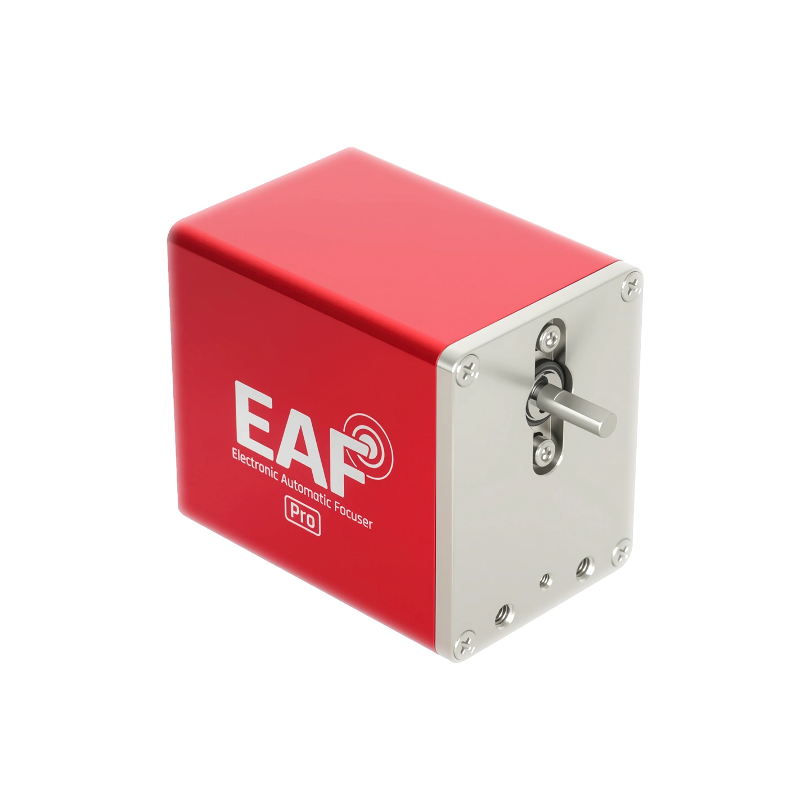
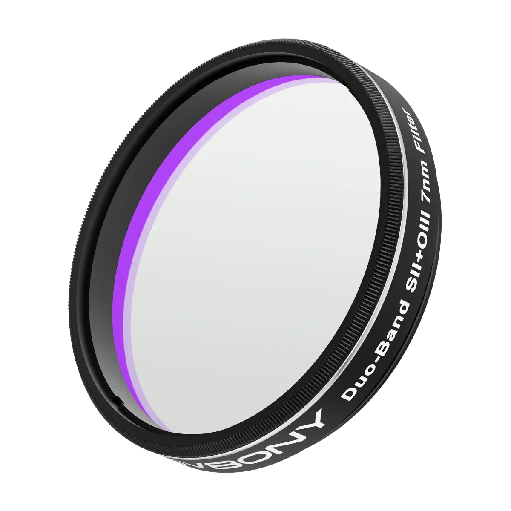

Measure separately
Find the sharpest focus position for each channel in your own setup.
Open-source · Raspberry Pi Pico · ASIAIR
A simple workaround that lets ASIAIR apply a measured focus offset for each band, reducing wavelength-dependent softness in fast optical systems.

The observation
In the tested setup, the red and green parts of the image were sharp at different ZWO EAF positions.
This can happen because the telescope, reducer, corrector, and other glass in the optical path do not treat every wavelength in exactly the same way. Fast systems have a very narrow range of good focus, so even a small difference can become visible.
Bahtinov mask observation
These two 3-second exposures were taken at f/4 and 140 EAF steps apart. In one image the green pattern is centered; in the other, the red pattern is centered. On an even faster system, a small focus difference may be easier to see because the range of good focus is narrower.
Moving the focuser by 140 steps shifts the centered Bahtinov spike from one color channel to the other. This shows what happened in this f/4 setup; it is not an offset that should be copied to another telescope. The result on a faster system still depends on its complete optical path.
Find the sharpest focus position for each channel in your own setup.
Enter the difference as a focus offset in ASIAIR.
The Pico provides three virtual slots. The physical filter never moves.
How it works
Choose Reference, Ha, or OIII. ASIAIR reads the saved offset and moves the real ZWO EAF.


Only the slot name and focus offset change. The same physical filter stays installed.
Autofocus position
Offset: 0
User-measured Ha offset
User-measured OIII offset
Requirements

Dual-band filterQuick start
No compiler is required when using the ready-made UF2 release.
Get the ready-made firmware from GitHub Releases.
Hold BOOTSEL while connecting the Pico to your computer.
Copy the UF2 to the RPI-RP2 drive.
Connect the Pico with a USB data cable. ASIAIR should detect an EFW with virtual slots.
ASIAIR configuration
The numbers in the screenshots are examples. Use values measured with your own setup.
Turn on Before Autorun/Each Target Start. VFS relies on this setting so each target block begins with autofocus on the Reference slot.
Use Reference as zero, enter your Ha and OIII offsets, and turn on Use Filters Offsets.
Enter your measured backlash. Switch between all three slots and check that the focuser moves in the correct direction.
Imaging plan
Start on Reference, capture the Ha and OIII blocks, then return to Reference. This puts the next autofocus run on the expected slot.
Use shorter repeated target blocks if you want autofocus to run more often.
Scope and limitations
Common questions
Short answers to the questions most people ask first.
There is a trade-off. Both bands are still captured at the same time, but only one can be at its best focus if Ha and OIII focus at different positions. VFS lets you choose which band gets priority.
Separate filters and a real filter wheel are the better choice for some setups. VFS is for people who already use one fixed dual-band filter and want more control without adding a physical wheel.
It is still recorded, but it may be slightly out of focus. Whether that data is still useful depends on your optics and the size of the focus difference.
You can, but the next autofocus run may return to a position between the best Ha and OIII focus points. A virtual slot lets ASIAIR reapply the saved offset automatically.
No. A pre-shifted filter is designed to reduce bandpass shift in fast optics, helping its transmission bands stay aligned with the Ha and OIII emission lines. It does not correct wavelength-dependent focus differences introduced by the rest of the optical system. VFS solves the opposite part of the problem: it applies your measured focus offsets, but it does not correct bandpass shift. If your setup needs a fast-optics filter, you may still need one.
Measure both channels several times. If the focus difference is repeatable and visible in your images, VFS may help. If both channels are already sharp, there may be nothing to fix.
Yes, after you have measured the offsets and tested every slot change, offset direction, and backlash setting indoors.
No. VFS changes virtual slot names and focus offsets only. It never changes the filter in front of the camera.
Build it. Test it. Share what you learn.
Download the firmware, follow the setup guide, and test every slot before leaving the setup unattended.